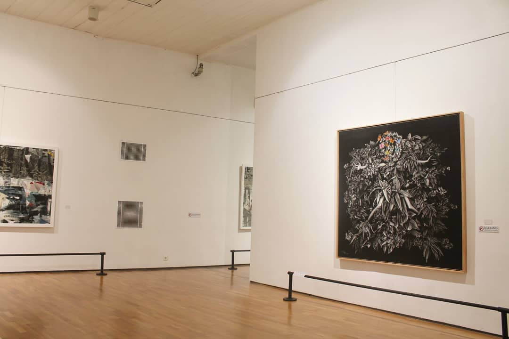
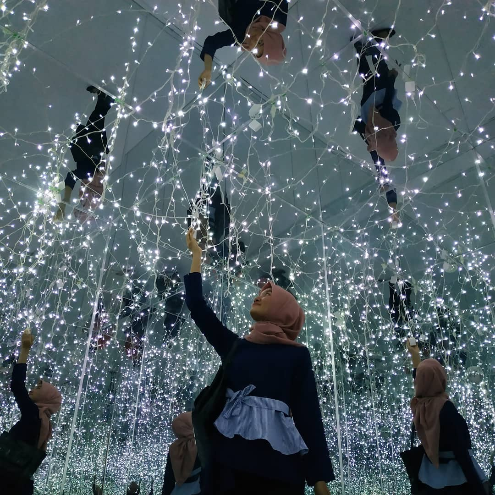
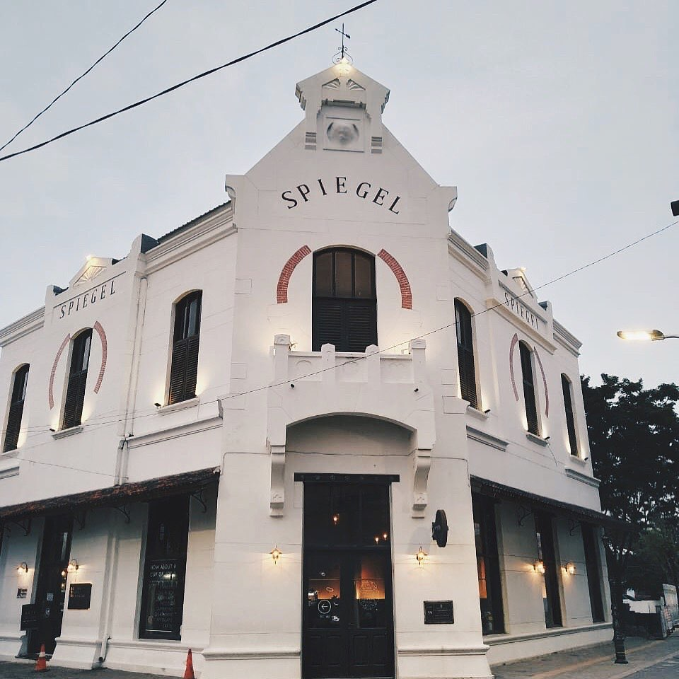

Berencana untuk berlibur ke Semarang? Tak hanya wisata alam seperti pantai dan gunung, sudut-sudut kota Semarang juga patut dikelilingi. Kamu bisa bersafari menuju masjid, gereja, hingga kompleks bangunan tua di Kota Lama Semarang. Mirip seperti Kota Tua di Jakarta, Kota Lama seolah menjadi mesin waktu yang akan membawa kembali ke masa lampau dan menjadi salah satu tempat wisata di Semarang yang wajib Anda kunjungi.
Kawasan yang tak boleh dilewatkan untuk dikunjungi di Kota Lama adalah Semarang Contemporary Art Gallery. Galeri seni ini memamerkan puluhan karya seni berbagai bentuk, seperti lukisan, foto, patung, kriya, dan karya seni rupa lainnya. Arsitektur galeri ini terinspirasi dari gaya kolonial dan berada di sisi belakang Taman Srigunting. Ingin berfoto dengan latar galeri seni dan beragam karyanya? Tidak usah cemas, pengunjung cukup merogoh kocek untuk tiket masuk galeri senilai Rp10.000 saja. Sangat terjangkau, deh.
kawasan Kota Lama juga memiliki museum yang sangat menarik untuk dikunjungi. Yaitu Old City 3D Art Museum. Konsep museum ini cukup kontras dengan kawasan yang didominasi oleh bangunan kuno. Soalnya, museum ini telah mendapatkan sentuhan modern. Berada di dalam museum, pengunjung akan merasakan pengalaman seperti menjelajahi Trick Eye Museum di Singapura. Tema fotonya pun beragam, seperti jalan-jalan ke luar negeri, kondisi berbahaya, dan berfoto dengan tokoh terkenal. Kamu pun bisa menyewa jasa profesional dari staf Old City 3D Art Museum untuk memotret dengan hasil yang terjamin keren.
Di antara bangunan klasik di Kota Lama, sungguh rugi kalau tidak singgah ke Spiegel Bar. Bangunan bergaya Eropa ini sangat jelas terlihat dari desain eksteriornya. Setelah disulap menjadi tempat nongkrong hits dan kekinian pada 2015 lalu, Speigel Bar akhirnya bangun dari mati surinya karena sempat mangkrak. Tidak heran sih, karena bangunan ini sudah berusia sekitar 120 tahun. Tapi tenang, tidak seperti Kota Lama Semarang, bangunan ini tidak memiliki kesan horor. Kamu akan merasakan pengalaman dan sensasi seolah sedang hang out di Eropa, deh.